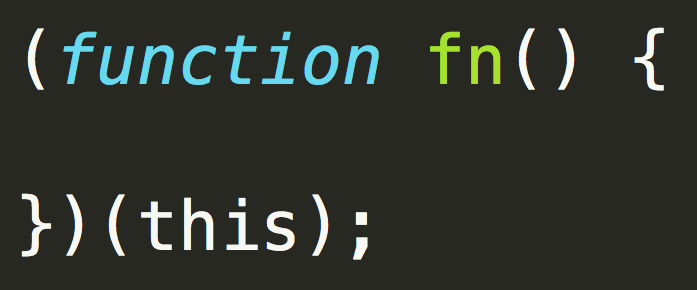
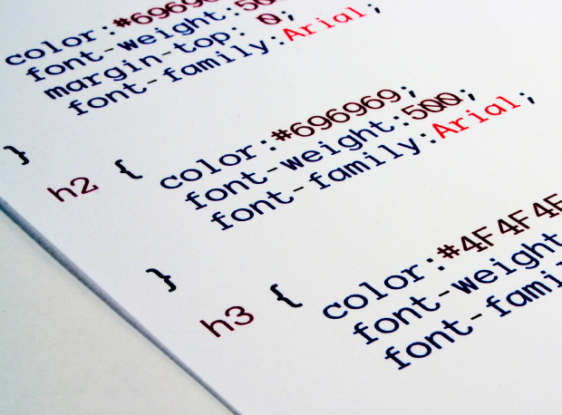
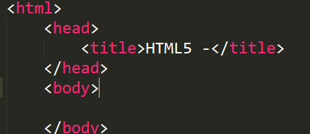

Scrollbar Plugin
스크롤바 플러그인
1. 자바스크립트
자바스크립트(JavaScript)는 객체 기반의 스크립트 프로그래밍 언어이다. 이 언어는 웹브라우저 내에서 주로 사용하며, 다른 응용프로그램의 내장 객체에도 접근할 수 있는 기능을 가지고 있다. 또한 Node.js와 같은 런타임 환경과 같이 서버 사이드 네트워크 프로그래밍에도 사용되고 있다. 자바스크립트는 본래 넷스케이프 커뮤니케이션즈 코퍼레이션의 브렌던 아이크(Brendan Eich)가 처음에는 모카(Mocha)라는 이름으로, 나중에는 라이브스크립트(LiveScript)라는 이름으로 개발하였으며, 최종적으로 자바스크립트가 되었다. 자바스크립트가 썬 마이크로시스템즈의 자바와 구문(syntax)이 유사한 점도 있지만, 이는 사실 두 언어 모두 C 언어의 기본 구문을 바탕했기 때문이고, 자바와 자바스크립트는 직접적인 관련성이 없다. 이름과 구문 외에는 자바보다 셀프와 유사성이 많다. 2013년 1월 기준으로, 가장 최근 버전은 자바스크립트 1.8.5이고[1], 파이어폭스 3에서 지원된다. 표준 ECMA-262 3판에 대응하는 자바스크립트 버전은 1.5이다. ECMA스크립트는 쉽게 말해 자바스크립트의 표준화된 버전이다. 모질라 1.8 베타 1이 나오면서 XML에 대응하는 확장 언어인 E4X(ECMA-357)를 부분 지원하게 되었다. 자바스크립트는 브라우저마다 지원되는 버전이 다르며, 가장 범용적으로 지원되는 버전은 1.5이다.
자바와 자바스크립트, 그리고 J스크립트
라이브스크립트의 이름이 자바스크립트로 변경된 것은 대략 넷스케이프가 자사의 넷스케이프 네비게이터 웹 브라우저에 자바 기술에 대한 지원을 포함하기 시작할 즈음이다. 자바스크립트는 1995년 12월 출시된 넷스케이프 2.0B3에서부터 공개, 채택되었다. 자바스크립트라는 이름은 상당한 혼란을 가져왔다. 이것은 자바와 자바스크립트 간에는 구문이 유사하다는 점(양쪽 모두 C에 바탕을 두었기 때문에) 외에는 실제 관련성이 없었기 때문이다. 두 언어는 의미론적으로 매우 다르고, 특히 각각의 객체 모델은 관련성이 없는데다가 상당 부분이 호환되지 않는다. 웹 페이지 향상 언어로서 자바스크립트의 성공에 자극 받은 마이크로소프트는 J스크립트로 알려진 호환 언어를 개발하게 되었다. J스크립트는 1996년 8월에 출시된 인터넷 익스플로러 브라우저 3.0부터 지원 되기 시작했다. IE 브라우저에서의 자바스크립트 사용은 실제로는 J스크립트의 사용을 의미하는 것이었다. 이에 대한 표준화 요구는 ECMA스크립트에 대한 ECMA-262 표준의 기반이 되었으며, 1996년 11월 이후 세 번째 판까지 출판됐다. 자바스크립트와 함께 자주 쓰이는 용어인 DOM은 사실 ECMA스크립트 표준의 일부가 아니며, 그것은 자체로 하나의 표준이고 XML에 기반한다.
2. CSS (Cascading Style Sheets)
CSS 또는 캐스케이딩 스타일 시트(Cascading Style Sheets)는 마크업 언어가 실제 표시되는 방법을 기술하는 언어로, HTML과 XHTML에 주로 쓰이며, XML에서도 사용할 수 있다. W3C의 표준이며, 레이아웃과 스타일을 정의할 때의 자유도가 높다. 마크업 언어가 웹사이트의 몸체를 담당한다면 CSS는 옷과 액세서리 같은 꾸미는 역할을 담당한다고 할 수 있다. 즉, HTML구조는 그대로 두고 CSS 파일만 변경해도 전혀 다른 웹사이트처럼 꾸밀 수 있다. CSS Zen Garden은 하나의 HTML(필요에 따라 최소한의 수정이 있다.)을 CSS만으로 얼마나 다양하게 표현할 수 있는지 알 수 있는 웹사이트다. 현재 개발 중인 CSS3의 경우 그림자 효과, 그라데이션, 변형 등 그래픽 편집 프로그램으로 제작한 이미지를 대체할 수 있는 기능이 추가되었다. 또한 다양한 애니메이션 기능이 추가되어 플래시를 어느정도 대체하고 있다.
CSS는 지속적으로 새로운 버전이 나오고 있다. 1996년에 도입된 CSS 1은 CSS의 바탕이 되었다. CSS의 표준으로는 CSS 2.1이 있으며 이전 버전에 비하여 새로운 기능과 도구가 추가되었다. 대다수의 웹브라우저는 CSS 2.1를 잘 지원한다.(인터넷 익스플로러의 경우, 버전 7이 되면서 CSS2.1을 지원한다.) 현재 W3C에서는 CSS3을 표준으로 만들고 있다. CSS는 여러 수준과 프로파일을 가지고 있다. 각 수준의 CSS는 일반적으로 새로운 기능을 담고 있으며 CSS1, CSS2, CSS3로 나뉜다. 프로파일들은 일반적으로 특정한 장치나 사용자 인터페이스를 위해 만들어진 하나 이상 수준의 CSS의 하부 집합이다. 현재 휴대용 장치, 프린터, 텔레비전 수상기를 위한 프로파일들이 있다.
3. HTML5
HTML5는 HTML의 차기 주요 제안 버전으로 월드 와이드 웹 (World Wide Web)의 핵심 마크업 언어이다. 2004년 7월 Web Hypertext Application Technology Working Group(WHATWG)에서 웹 애플리케이션 1.0이라는 이름으로 세부 명세 작업을 시작하였다. HTML5는 HTML 4.01, XHTML 1.0, DOM Level 2 HTML에 대한 차기 표준 제안이다. 최신 멀티미디어 콘텐츠를 브라우저에서 쉽고 용이하게 볼 수 있게하는 것을 목적으로 한다. W3C는 2014년 10월 28일 HTML 5 표준안을 확정했다고 발표 했다.